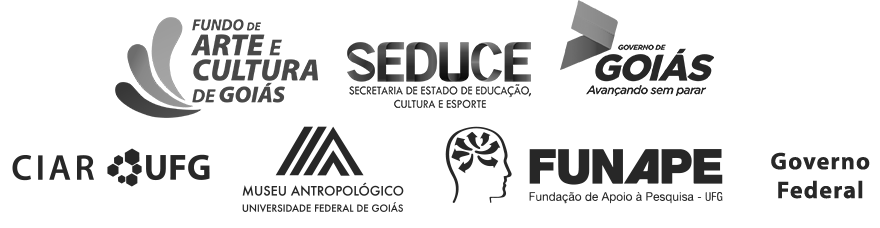

Governo Federal • República Federativa do Brasil • Ministério da Educação • Universidade Federal de Goiás
Topos: espaços de Ewald Janssen
Organização
Ana Cristina de Menezes Santoro
Dilamar Candida Martins
1ª Edição
Este projeto foi contemplado pelo Fundo de Arte e Cultura do Estado de Goiás 2016, SEDUCE e Governo de Goiás.

Goiânia, 2019.
Todo o conteúdo deste material é de inteira responsabilidade de seus respectivos autores.
Ficha Técnica
- Reitoria
- Edward Madureira Brasil
- Vice-Reitoria
- Sandramara Matias Chaves
- Pró-Reitoria de Pesquisa e Inovação
- Jesiel Freitas Carvalho
- Direção do Museu Antropológico
- Manuel Ferreira Lima Filho
- Vice-Direção do Museu Antropológico
- Diego Teixeira Mendes
- Coordenação de Antropologia
- Diego Teixeira Mendes
- Coordenação de Integração do Museu Antropológico com o Curso de Museologia
- Ivanilda Aparecida Andrade Junqueira
- Coordenação de Intercâmbio Cultural
- Adelino Adilson de Carvalho
- Coordenação de Museologia
- Ana Cristina de Menezes Santoro
- Secretaria administrativa
- Sandra Câmara Alves de Freitas
- Organização do conteúdo
- Ana Cristina de Menezes Santoro
- Dilamar Candida Martins
- Autoria
- Ana Cristina de Menezes Santoro
- Dilamar Candida Martins
- Karolyn Soledad Saavedra Correia
- Vanessa Ferreira de Almeida Resende
Universidade Federal de Goiás
Museu Antropológico
- Coordenação
- Ana Cristina de Menezes Santoro
- Dilamar Candida Martins
- Conservação e Restauro
- Ana Cristina de Menezes Santoro
- Karolyn Soledad Saavedra Correia
- Documentação museológica
- Karolyn Soledad Saavedra Correia
- Vanessa Ferreira de Almeida Resende
- Bolsistas
- Aline Santos de Oliveira
- Augusto Godinho Vespucci
- Janaína Ferreira dos Santos da Silva
- Lucas de Souza Nonato
- Lucas Rezende Cruz
- Marcelo Giovanny Saavedra Correia
- Pesquisa histórica
- Ana Cristina de Menezes Santoro
- Lucas Resende Cruz
- Consultoria Museológica
- Vânia Dolores Estevam de Oliveira
- Gestão do projeto
- Fundação de Apoio à Pesquisa
- Direção do Centro Integrado de Aprendizagem em Rede • CIAR
- Marília de Goyaz
- Vice-Direção do Centro Integrado de Aprendizagem em Rede • CIAR
- Silvia Carla Nunes de Figueiredo Costa
- Coordenação de Publicação
- Ana Bandeira
- Coordenação de Publicação Multimídia
- Wagner Bandeira
- Design Gráfico • Projeto Editorial
- Equipe de Publicação CIAR
- Projeto de Identidade Visual
- Leandro Abreu
- Implementação e Desenvolvimento
- Ana Flávia Cador
- Victor Hugo Godoi
- Diagramação
- Ana Flávia Cador
Projeto Gestão do Acervo Documental de Ewald Janssen: Restauração, Difusão e Circulação Patrimonial
Centro Integrado de Aprendizagem em Rede • CIAR
Dados Internacionais de Catalogação na Publicação (CIP) GPT/BC/UFG
Bibliotecária responsável: Adriana P. Aguiar / CRB1: 3172
T675
Topos: espaços de Ewald Janssen [ebook] / organização, Ana Cristina de Menezes Santoro, Dilamar Candida Martins. - Goiânia : Gráfica da UFG, 2018.
36 p.: il.; CD-ROM.
Inclui referências.
ISBN: 978-85-495-0252-0
1. Gestão acervo documental. 2. Ewald Janssen. 3. Planejamento urbano. I. Santoro, Ana Cristina de Menezes. II. Martins, Dilamar Candida.
CDU: 087
Desenvolvimento por